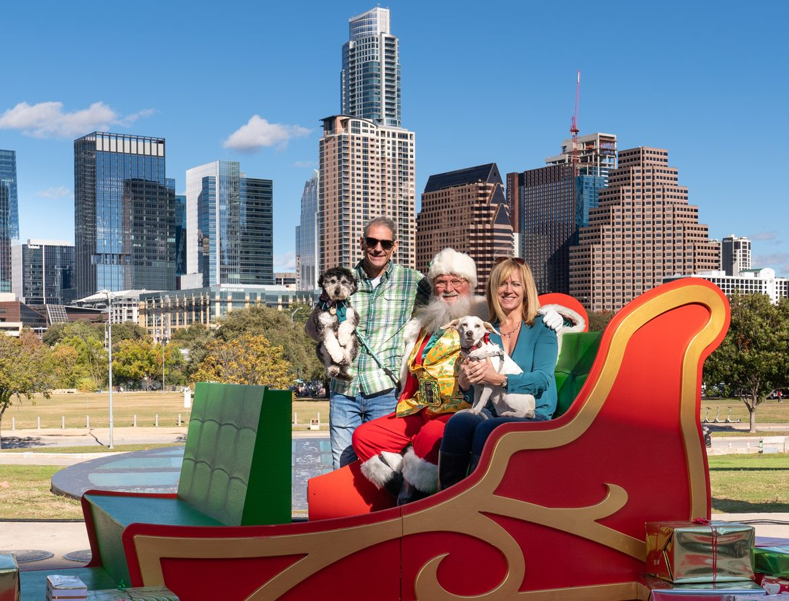
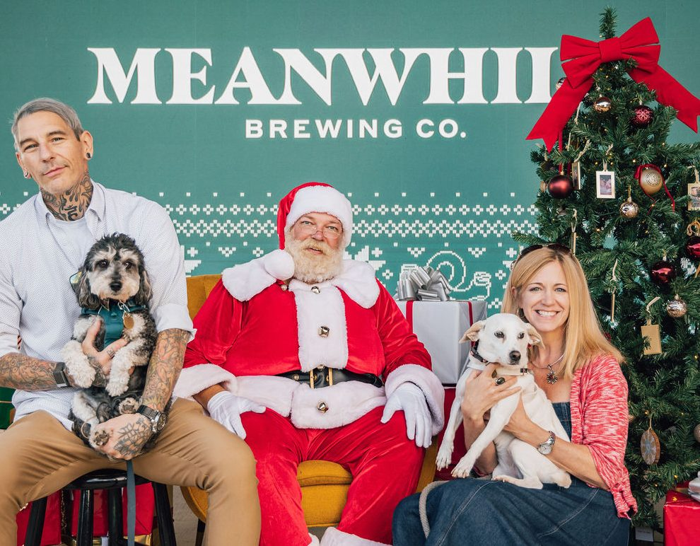
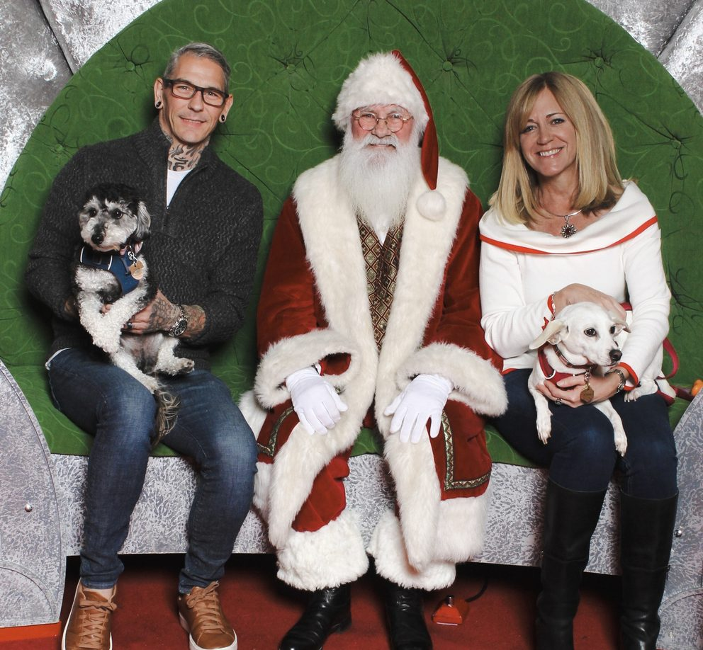

Every December, Seven and I put Baxter and Lucy in their holiday best and go find Santa. Over the past four years we’ve tried three spots around town, and each one gives you a very different picture for your holiday card.
Santa on the Terrace at the Long Center
If you want a photo that says Austin, this is the one. Santa sits in a big red sleigh on the Long Center terrace with the downtown skyline behind him. Leashed pets are welcome. We made the Long Center our holiday photo destination in 2022 and 2024.
The line is long, but it moves, winding back and forth like an amusement park queue. Get there early, because the Long Center caps attendance and warns that a spot in line doesn’t guarantee a photo. When my parents joined us in 2024, the staff found a folding chair for my dad, so the wait was easy for everyone.
This year’s Santa on the Terrace is Saturday, Nov. 28. Doors open at 11 a.m., and the Santa line closes at 2:30 p.m. (Long Center members and H-E-B partners get an early visit with Santa from 10 to 10:30 a.m., with cookies and cocoa.)
The event and the photos are free. You enter your phone number and email on an iPad and the photo comes straight to your phone, and prints are available on site. 701 W. Riverside Drive, with easy parking in the Long Center garage.

Pet Night at Barton Creek Square
Our 2023 portrait came from the mall, and it’s the most classic of the bunch. Santa sits on a green velvet throne in front of a sparkly silver backdrop, with a real beard and a beautiful suit.
The wait is the catch. Pet night is popular, and without a reservation you can spend hours in line hoping every dog around you keeps its cool. The mall says reservations are optional. Take it from us and book one anyway. Even with a reservation, you wait.
This year, pet night is Sunday, Dec. 13, from 6 to 8 p.m. on the lower level in front of the Care Bears Play Area. Park near the entrance between the two Dillard’s stores. Photos are for sale, and they can be pricey. 2901 S. Capital of Texas Highway.
If you live farther north, Lakeline Mall in Cedar Park holds its own pet night that same evening in Dillard’s Court, also from 6 to 8 p.m.

Santa Paws at Meanwhile Brewing
Meanwhile was our best experience of the three. You give up the skyline for a green Meanwhile-branded backdrop and a tree topped with a giant red bow, but you get a much more relaxed afternoon. There’s plenty of room to spread out on the grounds, and you can grab a pilsner or a fancy coffee while you wait your turn. The event attracts a more laid back crowd as well, and people tend to linger at the picnic tables before and after their photo opp.
This year’s Santa Paws Holiday Party is Saturday, Dec. 12. Free photos with Santa run from noon to 2 p.m., taken by Paws ‘N Poses. All About Dogs ATX is also running a dog-themed market from 11 a.m. to 3 p.m., with more than 15 local small businesses selling treats and gifts for pups and their people. The Dogs Landing House is bringing adoptable dogs, so you may go home with one more family member than you came with. Holiday outfits are encouraged, and Meanwhile asks guests to RSVP on Partiful. 3901 Promontory Point Drive.
Cedar Park’s Tail of Lights
If your pup prefers an evening out, you may want to venture north for Cedar Park’s Tail of Lights. Built just for dogs. Lakeline Park turns into a lit walking path with holiday music, pet-friendly vendors and a Yappy Hour with treats for dogs and their people. Santa Paws will be there for photos, so bring your phone. It’s free. Saturday, Dec. 12, from 6:30 to 8:30 p.m.
(Don’t confuse this event with Zilker Park’s Trail of Lights. Pets aren’t allowed on the trail.)
Tips From Our Pack
- Book a reservation or arrive early, whichever applies.
- Bring your dog’s favorite treats so they’ll look at the camera.
- A long walk beforehand helps calm Santa-anxiety and improves line manners.
- Let your pup sniff Santa before the photo.
- Double check each event’s page before you go, since dates and times can change.
Whichever Santa you pick, the dogs are the real stars. All three spots draw pups in outfits that put my holiday sweater to shame. Lucy and Baxter will be decked out in red and green plaid this year. We’ll see you in line!
